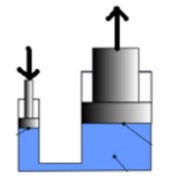
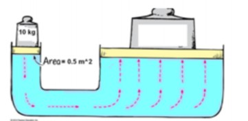
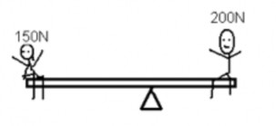
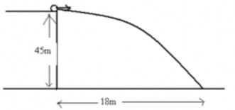

-------------------------------------------------------------------------
This exam is closed book and closed notes. You should only need a pencil/pen, an eraser and a calculator. Put everything else away. Turn off all cell phones.
The time to visit the restroom is NOW, not during the test!
In each case, show your work. Answer the question in as much detail as possible, but make sure to answer all questions and all parts of all questions. Check them off as you go to make sure you do not miss important aspects of the problem.
If you have a question, raise your hand. Please do not get up from your seat during the test, and do not yell across the room. If a key question is raised that everyone needs to know about, I will make an announcement.
(If required, use acceleration due to gravity g = 10 m/s2, density of water = 1 g/cm3 = 1000 kg/m3)
A clerk can lift containers a vertical distance of 1 meter or can roll them up a 2 meter-long ramp to the same elevation. With the ramp, potential energy stored in the container at the final location is
half as much.
twice as much.
the same.
four times as much.
In the hydraulic machine shown below, when the small piston is pushed down 10 cm, the large piston is raised 1 cm. If the small piston is pushed down with a force of 100 N, what is the most weight that the large piston can support?

1 N
10 N
100 N D) 1000 N
A TV set is pushed a distance of 2 m with a force of 20 N. How much work is done by the applied force on the set?
2 J
10 J
20 J
40 J
800 J
No work is done by gravity on a bowling ball that rolls along a bowling alley because
no force acts on the ball.
no distance is covered by the ball.
the force on the ball is at right angles to the ball's motion.
no potential energy is being converted to kinetic energy.
its kinetic energy remains constant.
Which has greater kinetic energy, a car traveling at 30 km/hr or a car of half the mass traveling at 60 km/hr?
the 30 km/hr car
the 60 km/hr car
Both have the same kinetic energy.
More information is needed about the distance traveled.
If the speed of a moving object doubles, which of the following also doubles?
momentum
kinetic energy
acceleration
all of the above
A ball rolling down an incline has its maximum kinetic energy at
the top.
halfway down.
three-quarters of the way down.
the bottom.
A diver who weighs 500 N steps off a diving board that is 10 m above the water. The diver hits the water with kinetic energy of
A) 10 J. B) 500 J. C) 510 J. D) 5000 J.
E) more than 5000 J.
If a turntable's rotational speed is doubled, then the linear speed of a pet hamster sitting on the edge of the record will
double.
halve.
remain the same.
Consider a string with several rocks tied along its length at equally spaced intervals. You whirl the string overhead so that the rocks follow circular paths. Compared to a rock in the middle of the string, a rock at the outer end moves with a linear speed
4/13
half as fast.
twice as fast.
at the same linear speed.
An industrial flywheel has a greater rotational inertia when most of its mass is
nearest the rim.
nearest the axis.
uniformly spread out as in a disk.
A coin and a ring roll down an incline starting at the same time. The one to reach the bottom first will be the
ring.
coin.
Both reach the bottom at the same time.
A torque acting on an object tends to produce
equilibrium.
rotation.
linear motion.
velocity.
a center of gravity.
On a balanced seesaw, a boy three times as heavy as his partner sits
1/3 the distance from the fulcrum.
less than 1/3 the distance from the fulcrum.
more than 1/3 the distance from the fulcrum.
A baseball bat is balanced on a fulcrum. The center of gravity of the bat is located
closer to the handgrip.
above the fulcrum.
near the heavy end.
Neglecting air resistance, which will roll from rest to the bottom of an incline first, an empty jar, or the same jar filled with peanut butter?
the filled jar
the empty jar
5/13
Both reach the bottom at the same time.
More information is needed.
According to Newton, the greater the masses of interacting objects, the
less the gravitational force between them.
greater the gravitational force between them.
greater the force between them by the square of the masses.
Consider two planets in space that gravitationally attract each other. If the masses of both planets are doubled, and the distance between them is also doubled, then the force between them is
one quarter.
half as much.
twice as much.
four times as much.
none of these
If the radius of the Earth somehow decreased with no change in mass, your weight would
increase.
not change.
decrease.
An object is placed exactly halfway between the Earth and moon. The object will fall toward the
Earth.
moon.
neither of these
A weight watcher who normally weighs 400 N stands on top of a very tall ladder so she is one Earth radius above the Earth's surface. How much would she weigh there?
0
100 N
200 N
400 N
none of these
A very massive object A and a less massive object B move toward each other under the influence of gravitation. Which force, if either, is greater?
the force on A
6/13
the force on B
Both forces are the same.
When the distance between two stars decreases by half, the force between them
decreases by one-quarter.
decreases by one-half.
increases to twice as much.
increases to four times as much.
stays the same.
Inside a freely falling elevator, your
acceleration is zero.
apparent weight is zero.
gravitational interaction with the Earth is zero.
all of these
none of these
A rock is thrown upward at 60 degrees with respect to the horizontal. It follows a parabolic path. As it falls back, neglecting air drag, its vertical component of velocity
increases.
remains unchanged.
decreases.
A cannonball fired horizontally from a cannon begins to fall
as soon as it leaves the barrel.
after air friction reduces its speed.
neither of these
Ignoring air resistance, at what angle should a slingshot be oriented for maximum horizontal range?
45 degrees
90 degrees
None of the above
An Earth satellite is simply a projectile
freely falling around the Earth.
7/13
floating motionless in space near the Earth.
approaching the Earth from outer space.
A projectile is fired vertically from the surface of the Earth at 5 km/s. The projectile will
go into circular about the Earth.
go into an elliptical orbit about the Earth.
rise and fall back to the Earth's surface.
none of these
A satellite in an elliptical orbit travels at constant
velocity.
speed.
acceleration.
all of these
none of these
At the instance a cannon fires a cannonball horizontally over a level range, another cannonball held at the side of the cannon is released and drops to the ground. Which ball, the one fired downrange or the one dropped from rest, strikes the ground first?
the one fired downrange
the one dropped from rest
both hit the ground at the same time
more information is needed to solve the problem
According to Kepler's laws, the paths of planets about the sun are
parabolas.
circles.
straight lines.
ellipses.
none of these
When you stand on one foot instead of two, the force you exert on the floor is
less
the same
more
Water pressure is greatest against the
top of a submerged object.
bottom of a submerged object.
sides of a submerged object.
is the same against all surfaces
none of these
How many forces act on a submerged body at rest in a fluid?
One—buoyancy
Two—buoyancy and the force due to gravity
None—in accord with the equilibrium rule, ΣF = 0
None of the above.
A rock suspended by a string weighs 6 N out of water and 4 N when submerged. What is the buoy- ant force on the rock?
10 N
4 N
6 N
2 N
A graduated cylinder contains 20 mL of water. You place an object in the cylinder and the water level rises to 32 mL. What is the volume of the object?
32 mL
12 mL
52 mL
20 mL
A completely submerged object always displaces its own
volume of fluid.
weight of fluid.
density of fluid.
all of these
Two life preservers have identical volumes, but one is filled with Styrofoam while the other is filled with sand. When the two life preservers are fully submerged, the buoyant force is greater on the one filled with
Styrofoam.
sand.
same on each as long as their volumes are the same
Buoyant force is greatest on a submerged
10-newton block of lead.
10-newton block of aluminum.
is the same on each
Consider the hydraulic press shown below. Area of the small piston (left) is 0.5 m2 and the mass on the small piston is 10 kg. The area of the large piston is 5 times the area of the small piston.

What is the pressure on the small piston due to 10 kg mass? (2 points)
What is the pressure at the right piston? (1 point)
How much weight can you lift on the large piston by using the pressure found in part (b)? (2 points)
150N child and a 200N child are on a seesaw as shown below.

If the 150N child is 4 m from the fulcrum, how far the 200N child should be, to balance the seesaw? (2 points)
If the 150N child moves toward the fulcrum so that the distance to the fulcrum is now 3m, what is the torque produced by each child? (2 points)
In part (b) what happens to the balance of the seesaw? (1 point)
A child throws a ball horizontally over a cliff. The path of the ball is shown below. The ball lands 18m downrange (horizontal distance), and the elevation of the cliff is 45m.

What is the initial speed of the ball? (3 points)
What is the horizontal speed of the ball when it hits the ground (just before it stops)? (1 points)
What is the vertical speed of the ball when it hits the ground (just before it stops)? (1 point)
A block of aluminum with a volume of 10 cm3 is placed in a jar of water filled to the brim. Water overflows.
What the volume of the overflown water? (1 point)
What is the mass of the overflown water? (1 point)
What is the weight of the overflown water? (1 point)
What is the buoyant force acting on the block of aluminum? (1 point)
The density of aluminum is 2.7 g/cm3. Will the block of aluminum sink or float when placed in water? (1 point)
(when initial vertical velocity is zero)